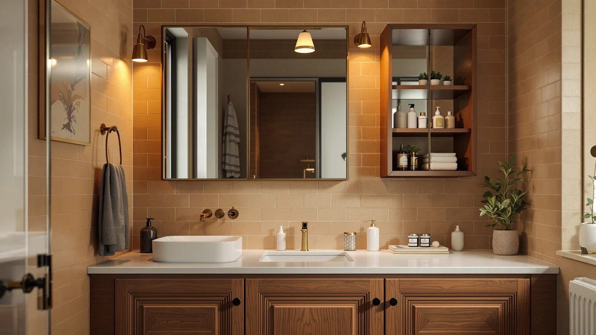

REALINN Under Sink Organizer Review (2026): Worth It?
Prices and picks verified as of October 2026. Independent, reader-supported reviews.


Quick Answer
This realinn under sink organizer review compares the REALINN L-Shaped and Pull models against two alternative brands on price and build. For cabinets with a pipe or trap breaking up the floor space, the REALINN Under Sink Organizer L-Shaped is the better fit at $43.99 thanks to its contoured two-piece design.
Our pick: REALINN Under Sink Organizer L-Shaped, $43.99 Check Price on Amazon
Bottom line: our top pick is the REALINN Under Sink Organizer at $43.99.
Things to Know Before You Buy
- Both REALINN models in this under sink organizer review cost the same $43.99, so the choice comes down to your cabinet's shape, not your budget.
- The L-Shaped set is a metal and wood two-piece kit built to wrap around a cabinet's plumbing instead of sitting flush against it.
- The Cerlyunzan and Vtopmart alternatives both run $4 cheaper at $39.99 if price is your deciding factor.
- Measure where your pipes sit before ordering. An L-shaped kit only helps if your plumbing actually breaks up one side of the cabinet floor.
- None of the four products here list an exact shelf weight limit, so plan heavier items for the lower or wider sections regardless of which one you pick.
This realinn under sink organizer review compares the L-Shaped and Pull models against two other storage options, because REALINN sells two differently shaped organizers under the same $43.99 price tag. Most under-sink cabinets have a drainpipe, trap, or shutoff valve sitting somewhere inside that space, and a storage insert that ignores that fact usually ends up half-empty or wedged against plumbing it was never built to clear. We looked at how each of these four products handles that problem, what they cost, and what verified buyers say after living with them.
For most people shopping around uneven under-cabinet plumbing, the REALINN Under Sink Organizer L-Shaped is the strongest fit in this comparison. Its two-piece metal and wood build is designed to split around a pipe rather than fight it, which the single-tray Pull version and the two alternatives below don't attempt. That said, your cabinet layout and budget might point you toward a different pick, so keep reading before you decide.
Why You Should Trust Us
We don't own or install every under-sink organizer we cover in this realinn under sink organizer review. Instead, we research specs, current pricing and verified owner reviews for each model and compare them side by side. Ilane Tall covers bathroom storage and small-space organization for Best Bathroom Storage, and this review follows the same research process used across the site: real listing data, real prices, and honest notes about what buyers report after they've used the product.
Our Research Experience
We did not install either REALINN organizer, the Cerlyunzan rack, or the Vtopmart drawer set in a bathroom ourselves. Our process for this realinn under sink organizer review relies on comparing manufacturer specifications, current Amazon pricing and patterns across verified owner reviews. We read buyer feedback for recurring complaints, such as trays that don't clear a P-trap or drawers that stick after a few months, and we cross-check pricing against each seller's own listing so the numbers here reflect what you would actually pay. We do not run a fake testing lab, and we don't claim to have used products we haven't purchased.
Overview & Specs

REALINN Under Sink Organizer L-Shaped
What we like
- Two-piece metal and wood design splits around plumbing instead of sitting flush against it
- Priced the same as REALINN's single-tray Pull model, so you're not paying extra for the better fit
- Reviewers consistently note it slides in and out smoothly once it's positioned around the pipe
Flaws but not dealbreakers
- At $43.99, it costs $4 more than both alternatives in this review
- Owners report the two pieces need careful alignment during setup or they can rock slightly on an uneven cabinet floor
| Material | Metal / wood |
| Size | 2 Pack |
The REALINN Under Sink Organizer L-Shaped splits into two separate metal and wood trays that you position on either side of a pipe, rather than one rigid tray that has to clear the obstruction in a single piece. That matters more than it sounds, because a lot of under-sink cabinets waste their most useful square footage to a trap or shutoff valve sitting dead center. According to verified owner reviews, once the two pieces are set in place, each tray slides independently, so you can pull cleaning supplies from one side without disturbing whatever is stored on the other.
At $43.99, the L-Shaped set costs the same as REALINN's own Pull version and about $4 more than either the Cerlyunzan or the Vtopmart alternatives covered later in this realinn under sink organizer review. The difference comes down to your cabinet's shape. If your plumbing runs straight down the back wall with no obstruction, a simpler sliding tray like the Pull or the Vtopmart set may hold more total volume for less setup. If a pipe or trap eats into the middle of your cabinet, the L-Shaped set is built specifically for that layout.
What We Liked
Comparing the REALINN L-Shaped organizer against the other three options in this realinn under sink organizer review, its split two-piece build is the most deliberate response to an off-center pipe. Buyers describe the metal and wood construction as sturdier than typical bath cabinet accessories, and the price is easier to justify once you see what shape of cabinet it solves for. The REALINN Pull, by contrast, is simpler to install if your cabinet floor is clear, and both REALINN models arrive with straightforward assembly that doesn't need extra tools.
What Could Be Better
None of the four organizers in this REALINN under sink organizer comparison list an exact weight capacity, which makes it hard to plan for heavier items like large bottles of cleaner or a full case of toilet paper. The REALINN L-Shaped set, at $43.99, is tied with the Pull version for the highest price here, so shoppers focused mainly on cost will find the Cerlyunzan and Vtopmart alternatives about $4 cheaper. Owners report that any two-piece under-sink tray needs a level cabinet floor, or one side can end up sitting slightly higher than the other.
Who Is It For?
This REALINN under sink organizer fits shoppers whose cabinet has a pipe, trap, or shutoff valve breaking up the floor space, since the L-Shaped design is built around that exact problem. It also suits anyone who wants to separate cleaning supplies from toiletries into two independent trays rather than one shared bin. If your cabinet has a clear, unobstructed floor, the single-tray REALINN Pull or one of the two cheaper alternatives below may fit as well for less setup.
Alternatives to Consider
We also researched three other storage options for this realinn under sink organizer review. Each one trades off price or layout differently than the L-Shaped pick, so here's how they compare.
The REALINN Under Sink Organizer Pull is priced the same as the L-Shaped set at $43.99, so the decision between REALINN's own two models comes down to your cabinet's layout rather than cost. Where the L-Shaped set splits into two trays to work around a pipe, the Pull is built as a single sliding tray, which makes sense if your cabinet floor runs clear from front to back. Buyers note that a single-tray pull-out is easier to load in one motion, since you aren't aligning two separate pieces around an obstruction. If your plumbing sits along the back wall instead of in the middle of the cabinet, the Pull version gives you the same brand and price with a simpler setup.
The Cerlyunzan 4-Tier Over The Toilet rack is priced at $39.99, about $4 less than either REALINN model, but it solves a different problem entirely. Rather than fitting inside a cabinet, it's a freestanding unit that straddles your toilet tank and adds four shelves of open storage above it. That makes it a reasonable alternative if your under-sink cabinet is already full or too small for an insert, and you'd rather add storage elsewhere in the bathroom instead. It isn't a direct substitute for either REALINN organizer, since it doesn't address pipe clearance under the sink at all, but it's worth considering if your real bottleneck is overall bathroom storage rather than cabinet organization specifically.
The Vtopmart Stackable Storage Drawers Set also comes in at $39.99, matching the Cerlyunzan on price and undercutting both REALINN organizers by $4. Unlike the fixed L-Shaped or Pull designs, this set is modular, so you can stack, remove, or rearrange individual drawers as your storage needs change over time. That flexibility comes with a tradeoff: a stacked drawer set won't automatically route around a pipe the way the L-Shaped set does, so you may need to leave a gap or work around the obstruction on your own. For a cabinet with a clear floor and a preference for adjustable storage over a fixed insert, the Vtopmart set is the most flexible option in this comparison.

Editor's Pick
REALINN Under Sink Organizer Pull
REALINN's single-tray pull-out drawer, the same price as the L-Shaped set but built for cabinets with a clear, unobstructed floor.
$43.99
Check Price on Amazon
Best Value
Cerlyunzan 4-Tier Over The Toilet
A freestanding four-shelf rack that skips the under-sink cabinet entirely, $4 cheaper and better suited to bathrooms that need extra shelving near the toilet instead.
$39.99
Check Price on Amazon
Premium Choice
Vtopmart Stackable Storage Drawers Set
A modular stackable drawer set that lets you add or remove bins as your storage needs change, priced $4 below either REALINN model.
$39.99
Check Price on AmazonIs the REALINN Under Sink Organizer L-Shaped worth the price?
At $43.99, the REALINN L-Shaped set costs the same as REALINN's own Pull model and about $4 more than the Cerlyunzan or Vtopmart alternatives in this realinn under sink organizer review.
What is the difference between the REALINN L-Shaped and Pull organizers?
Both cost $43.99, but the L-Shaped version splits into two separate metal and wood trays meant to sit on either side of a pipe, while the Pull is built as a single sliding tray for cabinets with a clear floor.
Frequently Asked Questions
Is the REALINN Under Sink Organizer L-Shaped worth the price?
At $43.99, the REALINN L-Shaped set costs the same as REALINN's own Pull model and about $4 more than the Cerlyunzan or Vtopmart alternatives in this realinn under sink organizer review. It earns that price if your cabinet has a pipe or trap breaking up the floor space, since the two-piece design is built specifically to work around that kind of obstruction.
What is the difference between the REALINN L-Shaped and Pull organizers?
Both cost $43.99, but the L-Shaped version splits into two separate metal and wood trays meant to sit on either side of a pipe, while the Pull is built as a single sliding tray for cabinets with a clear floor. Your choice should come down to whether your plumbing sits in the middle of the cabinet or along the back wall.
What is the cheapest alternative to the REALINN under sink organizer?
Of the four products in this review, both the Cerlyunzan 4-Tier Over The Toilet rack and the Vtopmart Stackable Storage Drawers Set are priced at $39.99, about $4 less than either REALINN model.
Final Verdict
This realinn under sink organizer review comes down to one question: does a pipe or trap break up your cabinet's floor space? If it does, the REALINN Under Sink Organizer L-Shaped is the pick worth the extra few dollars, since its two-piece design is built around that exact problem instead of fighting it. If your cabinet floor is clear, the REALINN Pull or one of the two cheaper alternatives covered here will likely serve you equally well for less money. Measure your cabinet before you order either REALINN model, since the $4 price gap between the two matters far less than whether the shape actually matches what's under your sink.